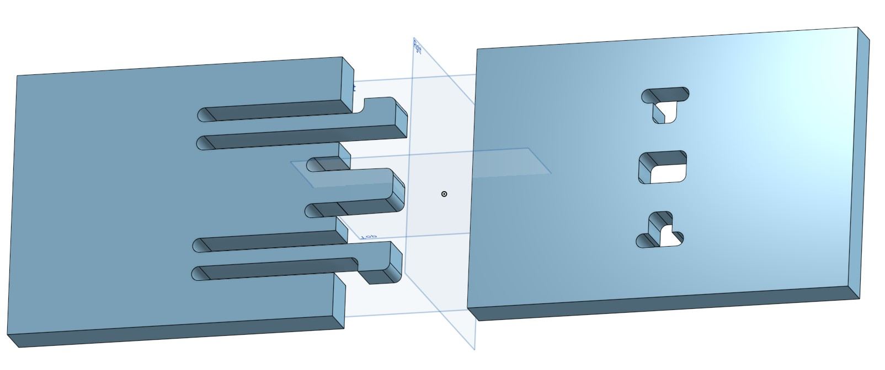
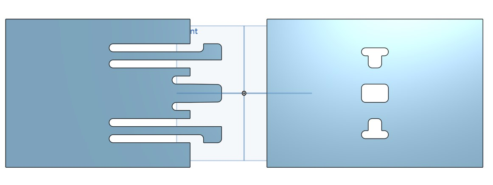
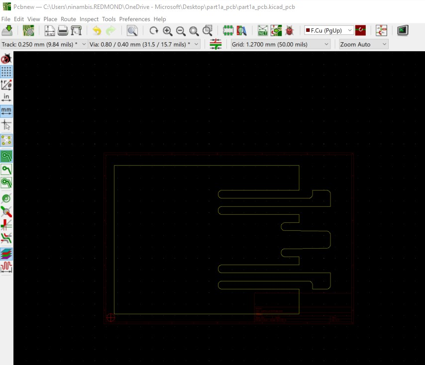
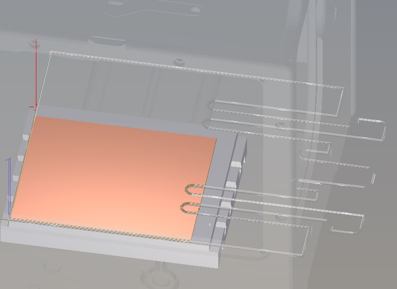
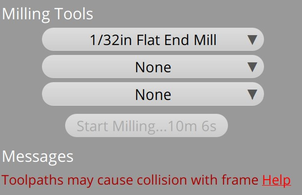

Assignment 5: Milling Linkages

For this assignment, decided to create a joint that would create a lock between 2 plates.
Source Files
Original file source
CNC Joint Links- V1 Engineering
I browsed many CNC join designs, & found the V1 Engineering page linked above to be helpful. This page had a link to various design dxf & dwg files.
OnShape
I imported the dxf file to OnShape and extruded it to 25mm thickness.

Preparing file for Milling with KiCad & Bantam
I used method 2 suggested by Joshua and used KiCad to create .grb file to import to Bantam.

I then imported the .grb file to Bantam and ran into issues, where the size of the canvas was smaller than the file.

I tried changing the size of the canvas, but kept getting the same error -- "Toolpaths may cause collision with frame".


At this point I rant out of time & was unable to troubleshoot or do the milling in the lab.
Issues encountered & lessons learnt
I was unable to scale the object/image/sketch across OnShape, KiCad or Bantam and wondered if this was even possible. Another issue was the toolpaths were causing collision which I didn't know how to troubleshoot.
Peer Attributions
Thank you V1 engineering for the design inspiration & sharing the 3D files freely for others to use.
Thank you Joshua for showing us ways to prep the file for milling.